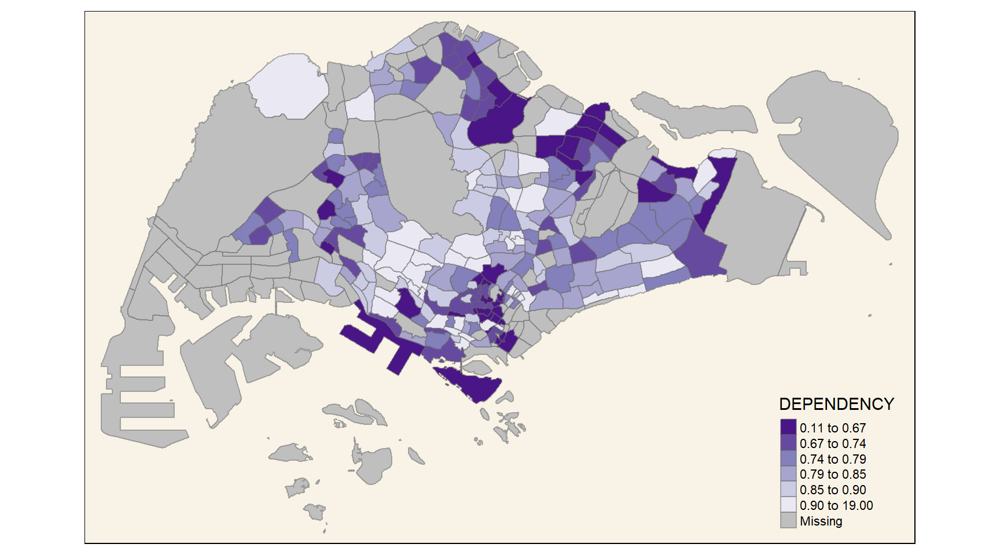
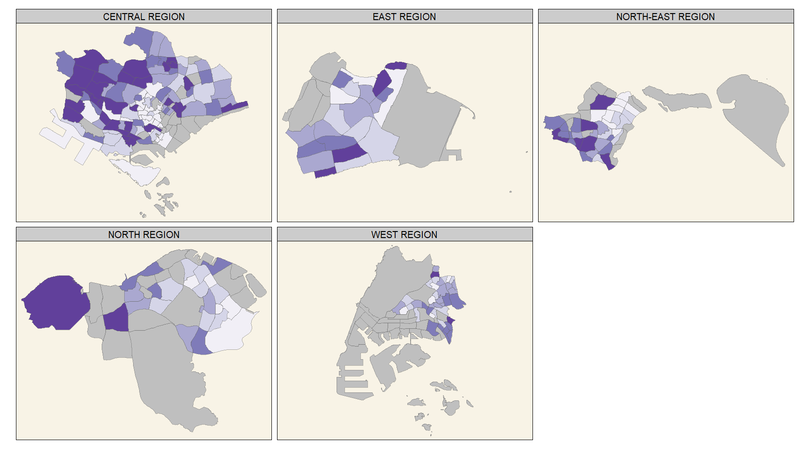
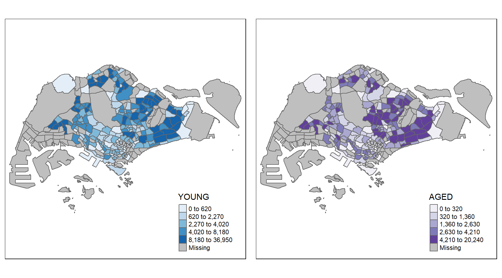
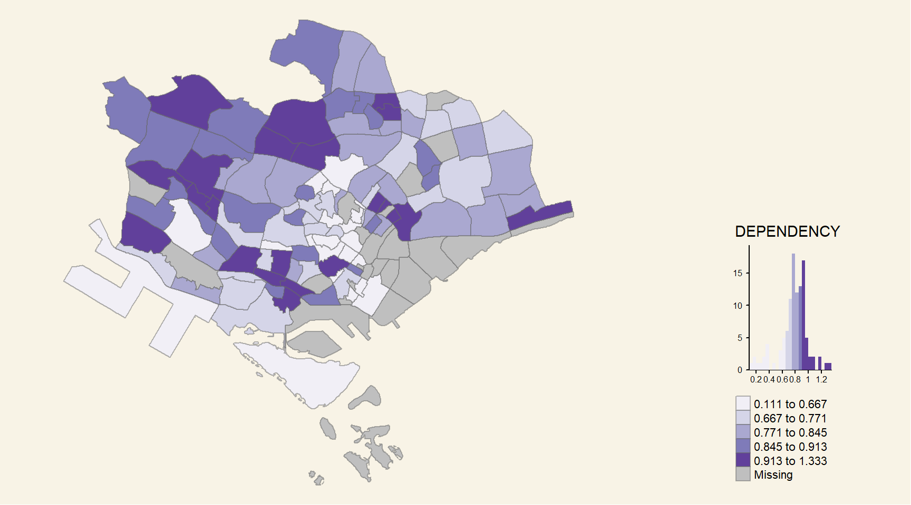

pacman::p_load(sf, tmap, tidyverse, skimr)Hands-on Exercise 8
Cloropleth Mapping in R
Loading the packages
Importing data
Dataset types used for this study are:
- ESRI Shapefile:
MP14_SUBZONE_WEB_PL - aspatial data file:
respopagesextod2011to2020.csv, with fields used as unique identifiers to geocode the shapefile
mpsz <- st_read(dsn = "data/geospatial",
layer = "MP14_SUBZONE_WEB_PL")Reading layer `MP14_SUBZONE_WEB_PL' from data source
`C:\haileycsy\ISSS608-VAA\Hands-on_Ex\Hands-on_Ex08\data\geospatial'
using driver `ESRI Shapefile'
Simple feature collection with 323 features and 15 fields
Geometry type: MULTIPOLYGON
Dimension: XY
Bounding box: xmin: 2667.538 ymin: 15748.72 xmax: 56396.44 ymax: 50256.33
Projected CRS: SVY21skim(mpsz)Warning: Couldn't find skimmers for class: sfc_MULTIPOLYGON, sfc; No
user-defined `sfl` provided. Falling back to `character`.| Name | mpsz |
| Number of rows | 323 |
| Number of columns | 16 |
| _______________________ | |
| Column type frequency: | |
| character | 9 |
| Date | 1 |
| numeric | 6 |
| ________________________ | |
| Group variables | None |
Variable type: character
| skim_variable | n_missing | complete_rate | min | max | empty | n_unique | whitespace |
|---|---|---|---|---|---|---|---|
| SUBZONE_N | 0 | 1 | 4 | 29 | 0 | 323 | 0 |
| SUBZONE_C | 0 | 1 | 6 | 6 | 0 | 323 | 0 |
| CA_IND | 0 | 1 | 1 | 1 | 0 | 2 | 0 |
| PLN_AREA_N | 0 | 1 | 4 | 23 | 0 | 55 | 0 |
| PLN_AREA_C | 0 | 1 | 2 | 2 | 0 | 55 | 0 |
| REGION_N | 0 | 1 | 11 | 17 | 0 | 5 | 0 |
| REGION_C | 0 | 1 | 2 | 3 | 0 | 5 | 0 |
| INC_CRC | 0 | 1 | 16 | 16 | 0 | 323 | 0 |
| geometry | 0 | 1 | 642 | 75093 | 0 | 323 | 0 |
Variable type: Date
| skim_variable | n_missing | complete_rate | min | max | median | n_unique |
|---|---|---|---|---|---|---|
| FMEL_UPD_D | 0 | 1 | 2014-12-05 | 2014-12-05 | 2014-12-05 | 1 |
Variable type: numeric
| skim_variable | n_missing | complete_rate | mean | sd | p0 | p25 | p50 | p75 | p100 | hist |
|---|---|---|---|---|---|---|---|---|---|---|
| OBJECTID | 0 | 1 | 162.00 | 93.39 | 1.00 | 81.50 | 162.00 | 242.50 | 323.00 | ▇▇▇▇▇ |
| SUBZONE_NO | 0 | 1 | 4.63 | 3.23 | 1.00 | 2.00 | 4.00 | 6.50 | 17.00 | ▇▃▂▁▁ |
| X_ADDR | 0 | 1 | 27257.42 | 7960.90 | 5092.89 | 21863.96 | 28465.40 | 31673.72 | 50424.79 | ▁▃▇▃▁ |
| Y_ADDR | 0 | 1 | 36106.43 | 5664.60 | 19579.07 | 31776.14 | 35112.62 | 39868.91 | 49552.79 | ▁▅▇▅▂ |
| SHAPE_Leng | 0 | 1 | 6524.39 | 6995.82 | 871.55 | 3709.64 | 5211.87 | 6942.61 | 68083.94 | ▇▁▁▁▁ |
| SHAPE_Area | 0 | 1 | 2420881.68 | 6566826.26 | 39437.94 | 628260.89 | 1229894.42 | 2106482.99 | 69748298.79 | ▇▁▁▁▁ |
popdata <- read_csv("data/aspatial/respopagesextod2011to2020.csv")Rows: 984656 Columns: 7
── Column specification ────────────────────────────────────────────────────────
Delimiter: ","
chr (5): PA, SZ, AG, Sex, TOD
dbl (2): Pop, Time
ℹ Use `spec()` to retrieve the full column specification for this data.
ℹ Specify the column types or set `show_col_types = FALSE` to quiet this message.skim(popdata)| Name | popdata |
| Number of rows | 984656 |
| Number of columns | 7 |
| _______________________ | |
| Column type frequency: | |
| character | 5 |
| numeric | 2 |
| ________________________ | |
| Group variables | None |
Variable type: character
| skim_variable | n_missing | complete_rate | min | max | empty | n_unique | whitespace |
|---|---|---|---|---|---|---|---|
| PA | 0 | 1 | 4 | 23 | 0 | 55 | 0 |
| SZ | 0 | 1 | 4 | 29 | 0 | 335 | 0 |
| AG | 0 | 1 | 6 | 11 | 0 | 19 | 0 |
| Sex | 0 | 1 | 5 | 7 | 0 | 2 | 0 |
| TOD | 0 | 1 | 6 | 39 | 0 | 8 | 0 |
Variable type: numeric
| skim_variable | n_missing | complete_rate | mean | sd | p0 | p25 | p50 | p75 | p100 | hist |
|---|---|---|---|---|---|---|---|---|---|---|
| Pop | 0 | 1 | 39.86 | 132.25 | 0 | 0 | 0 | 10 | 2860 | ▇▁▁▁▁ |
| Time | 0 | 1 | 2015.51 | 2.88 | 2011 | 2013 | 2016 | 2018 | 2020 | ▇▇▇▇▇ |
Data Preparation
Only selected variables from year 2020 will be used for the study:
- YOUNG: age group 0 to 4 until age groyup 20 to 24,
- ECONOMY ACTIVE: age group 25-29 until age group 60-64,
- AGED: age group 65 and above,
- TOTAL: all age group, and
- DEPENDENCY: the ratio between young and aged against economy active group
# Preparing the attribute dataframe
popdata2020 <- popdata %>%
filter(Time == 2020) %>%
group_by(PA, SZ, AG) %>%
summarise(`POP` = sum(`Pop`)) %>%
ungroup()%>%
pivot_wider(names_from=AG,
values_from=POP) %>%
mutate(YOUNG = rowSums(.[3:6])
+rowSums(.[12])) %>%
mutate(`ECONOMICALLY ACTIVE` = rowSums(.[7:11])+
rowSums(.[13:15]))%>%
mutate(`AGED`=rowSums(.[16:21])) %>%
mutate(`TOTAL`=rowSums(.[3:21])) %>%
mutate(`DEPENDENCY` = (`YOUNG` + `AGED`)
/`ECONOMICALLY ACTIVE`) %>%
select(`PA`, `SZ`, `YOUNG`,
`ECONOMICALLY ACTIVE`, `AGED`,
`TOTAL`, `DEPENDENCY`)`summarise()` has grouped output by 'PA', 'SZ'. You can override using the
`.groups` argument.Standardising uppercase of fields
popdata2020 <- popdata2020 %>%
mutate(PA = toupper(PA),
SZ = toupper(SZ)) %>%
filter(`ECONOMICALLY ACTIVE` > 0)Left join on identifier
left_join() of dplyr is used to join the geographical data and attribute table using planning subzone name e.g. SUBZONE_N and SZ as the common identifier.
mpsz_pop2020 <- left_join(
mpsz,
popdata2020,
by = c("SUBZONE_N" = "SZ"))write rds file
write_rds(mpsz_pop2020, "data/rds/mpszpop2020.rds")Choropleth Mapping Geospatial Data Using tmap
Using qtm()
This creates a quick cartographic standard choropleth map:
tmap_mode()with “plot” option is used to produce a static map. For interactive mode, “view” option should be used.fillargument is used to map the attribute (i.e. DEPENDENCY)
tmap_mode("plot")tmap mode set to plottingqtm(mpsz_pop2020,
fill = "DEPENDENCY")
Using tmap’s elements
tmap has highly customizable options, with more control over map aesthetics:
tm_shape(mpsz_pop2020)+
tm_fill(
"DEPENDENCY",
style = "quantile",
palette = "Purples",
title = "Dependency ratio"
) +
tm_layout(
main.title = "Distribution of Dependency Ratio by planning subzone",
main.title.position = "center",
main.title.size = 1.2,
legend.height = 0.45,
legend.width = 0.3,
frame = FALSE,
bg.color = "#F8F3E6"
) +
tm_borders(alpha = 0.3) +
tm_compass(
type="8star",
size = 1
) +
tm_scale_bar() +
tm_grid(alpha =0.2) +
tm_credits(
"Source: Planning Sub-zone boundary from URA\n and Population data from Department of Statistics DOS",
position = c("left", "bottom")
)
tmap: custom breaks
Understanding distribution of DEPENDENCY values:
summary(mpsz_pop2020$DEPENDENCY) Min. 1st Qu. Median Mean 3rd Qu. Max. NA's
0.1111 0.7147 0.7866 0.8585 0.8763 19.0000 92 Adding breaks argument to tm_fill():
tm_shape(mpsz_pop2020)+
tm_fill(
"DEPENDENCY",
breaks = c(0, 0.60, 0.70, 0.80, 0.90, 1.00)
) +
tm_layout( bg.color = "#F8F3E6") +
tm_borders(alpha = 0.5)Assigning custom colors using RcolorBrewer palettes:
tm_shape(mpsz_pop2020)+
tm_fill("DEPENDENCY",
n = 6,
style = "quantile",
# Use '-' to reverse color
palette = "-Purples"
) +
tm_layout( bg.color = "#F8F3E6") +
tm_borders(alpha = 0.5)
Adding map legends
tm_shape(mpsz_pop2020)+
tm_fill("DEPENDENCY",
style = "jenks",
palette = "Purples",
legend.hist = TRUE,
legend.is.portrait = TRUE,
legend.hist.z = 0.1) +
tm_layout(main.title = "Distribution of Dependency Ratio by planning subzone \n(Jenks classification)",
main.title.position = "center",
main.title.size = 1,
legend.height = 0.45,
legend.width = 0.35,
legend.outside = FALSE,
legend.position = c("right", "bottom"),
frame = FALSE,
bg.color = "#F8F3E6") +
tm_borders(alpha = 0.5)Changing map styles:
tm_shape(mpsz_pop2020)+
tm_fill("DEPENDENCY",
style = "quantile",
palette = "-Greens") +
tm_borders(alpha = 0.5) +
tmap_style("classic")tmap style set to "classic"other available styles are: "white", "gray", "natural", "cobalt", "col_blind", "albatross", "beaver", "bw", "watercolor" Adding Cartographic elements
tm_compass(), tm_scale_bar() and tm_grid() are used to add compass, scale bar and grid lines onto the choropleth map:
tm_shape(mpsz_pop2020)+
tm_fill("DEPENDENCY",
style = "quantile",
palette = "Blues",
title = "No. of persons") +
tm_layout(main.title = "Distribution of Dependency Ratio \nby planning subzone",
main.title.position = "center",
main.title.size = 1.2,
legend.height = 0.45,
legend.width = 0.35,
frame = FALSE,
bg.color = "#F8F3E6" ) +
tm_borders(alpha = 0.5) +
tm_compass(type="8star", size = 2) +
tm_scale_bar(width = 0.15) +
tm_grid(lwd = 0.1, alpha = 0.2) +
tm_credits("Source: Planning Sub-zone boundary from Urban Redevelopment Authorithy (URA)\n and Population data from Department of Statistics DOS",
position = c("left", "bottom"))NOTE: to reset default map style, use:
tmap_style("white")tmap style set to "white"other available styles are: "gray", "natural", "cobalt", "col_blind", "albatross", "beaver", "bw", "classic", "watercolor" Facet Mapping
In tmap, small multiple maps can be plotted in three ways:
- by assigning multiple values to at least one of the asthetic arguments,
- by defining a group-by variable in tm_facets(), and
- by creating multiple stand-alone maps with tmap_arrange().
Assigning multiple fill values:
tm_shape(mpsz_pop2020)+
tm_fill(c("YOUNG", "AGED"),
style = c("equal", "quantile"),
palette = list("Blues", "Purples")
) +
tm_layout(legend.position = c("right", "bottom"),
bg.color = "#F8F3E6",
frame = FALSE) +
tm_borders(alpha = 0.5) +
tmap_style("white")tmap style set to "white"other available styles are: "gray", "natural", "cobalt", "col_blind", "albatross", "beaver", "bw", "classic", "watercolor" using facet_map() argument
tm_shape(mpsz_pop2020) +
tm_fill("DEPENDENCY",
style = "quantile",
palette = "Purples",
thres.poly = 0) +
tm_facets(by="REGION_N",
free.coords=TRUE,
drop.shapes=TRUE) +
tm_layout(legend.show = FALSE,
title.position = c("center", "center"),
title.size = 20,
bg.color = "#F8F3E6") +
tm_borders(alpha = 0.5)Warning: The argument drop.shapes has been renamed to drop.units, and is
therefore deprecated
Creating multiple maps using tm_arrange()
youngmap <- tm_shape(mpsz_pop2020)+
tm_polygons("YOUNG",
style = "quantile",
palette = "Blues")
agedmap <- tm_shape(mpsz_pop2020)+
tm_polygons("AGED",
style = "quantile",
palette = "Purples")
tmap_arrange(youngmap, agedmap, asp=1, ncol=2)
Conditional Mapping
tm_shape(
# Only plotting dependency for central region
mpsz_pop2020[mpsz_pop2020$REGION_N=="CENTRAL REGION", ]
)+
tm_fill("DEPENDENCY",
style = "quantile",
palette = "Purples",
legend.hist = TRUE,
legend.is.portrait = TRUE,
legend.hist.z = 0.1) +
tm_layout(legend.outside = TRUE,
legend.height = 0.45,
legend.width = 5.0,
legend.position = c("right", "bottom"),
frame = FALSE,
bg.color = "#F8F3E6") +
tm_borders(alpha = 0.5)Warning in pre_process_gt(x, interactive = interactive, orig_crs =
gm$shape.orig_crs): legend.width controls the width of the legend within a map.
Please use legend.outside.size to control the width of the outside legend